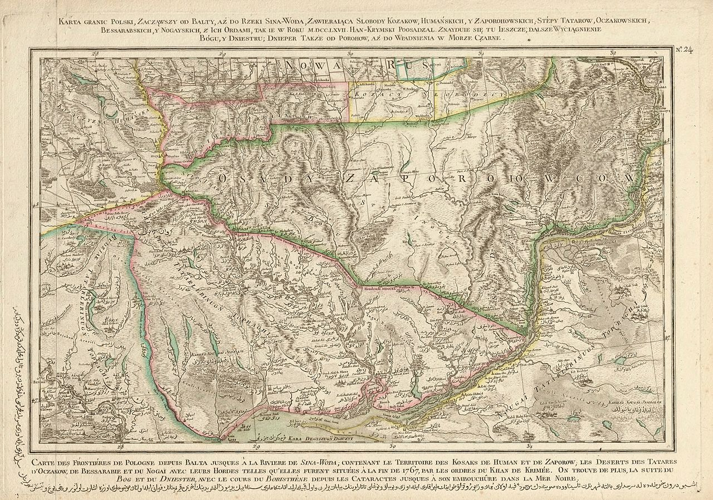

Українські козаки
КОЗАЦЬКІ ВІЙСЬКА , які початково були організовані задля оборони південно-руських земель, що увійшли до складу Князівства Литовського, від степових орд у часи тотального наступу Східного Світу і Великого Степу (в межах християнсько-мусульманського цивілізаційного протистояння) на терени сучасної України. Згодом, брали активну участь у війнах з Московським царством на боці Речі Посполитої, а від XVII ст., під час Визвольної війни, і супроти останньої. Надалі, через суперечки щодо внутрішнього та зовнішнього політичного курсу, під час періоду, що отримав назву «Руїна», воювали, у тому числі супроти один одного, переважно у союзі з різними сусідніми імперіями, до складу яких зрештою були інкорпоровані.Перші згадки про українських козаків зустрічаються в історичних джерелах 80–90-их років XV ст., йшлося про населення центральної України, яке ходило на різні промисли («в уходи») — полювання, рибальство, видобуток солі, селітри або займалося охоронною службою на кордоні між князівством Литовським і Кримським ханством.
Етнічно складалися переважно зі слов'ян. Попри наявність на ранніх стадіях розвитку певної частки представників кавказьких груп, яких використовували задля ліпшого проникнення вглиб степу. Надалі їх частка була незначна.
-
Зміст
- Походження
- Етимологія
- В Україні
- Передумови виникнення
- Організація
- Адміністративний поділ
- Військо Запорозьке
- Січ
- Гетьманщина
- Слобідські козаки
- Див. також
- Примітки
- Література
- Посилання
Етимологія
Докладніше:Козаки#Етимологія
Вважається, що термін «козаки», щодо руського населення Великого князівства Литовського, вперше було вжито
1492
року в листуванні великого князя з кримським ханом, який нарікав на похід киян та черкасців під
Тягиню.
Також на козаків він скаржився московському князеві наступного, 1493, року. Себто українське
воїнство хан
нарікав відомим собі (татарським/тюркським) словом «Kazak» — «вільна, незалежна людина», «шукач пригод»,
«бурлака».
Густинський літопис згідно А. Гваньїні:
« «…окаянний Миндикерей: послав чотирьох цариків із сорока тисячами татарів; і положилися при Бузську, а загони
по Волині і Поділлю розпустили, скрізь огнем і мечем пустошачи землю. У той то лихий рік і почалися на Україні
козаки... Жигмонт-король, хотячи оддячити, послав Прецлава Лянцькорунського збирати люд і так само татарам
пакостити. Той же, зібравши охотників кілька сот, пішов із ними аж під Білогород і там забрав множество товару,
і коней, і овець татарських і турецьких, та й повернувся назад. Татари ж бо і турки, зібравшись, гналися за
ними і настигли їх аж під Очаковом, і билися з ними; та наші поразили їх і з великим добитком та в доброму
здоров'ї повернулися. По тім козаками нареклися.» «
В той самий час мало місце пізніше висвітлення першими дослідниками історії козаків (Грабянка,
Симоновський,
«Історія Русів») питання походження козаків від козарів, котрі за їхньою гіпотезою були слов'янами (з
племен їх
данників). Перший військовий козацький похід, згідно з ними, відбувся в 948 р. Про цей похід нібито писав і
Костянтин VII Багрянородний в «Про управління імперією»:
« «Ці воїни, часто своїм союзникам допомагаючи, а паче Грекам у війнах з їхніми ворогами, перейменовані Царем
Грецьким Константином Мономахом з Козарів на Козаків, — і та назва назавжди вже у них залишилась.»: «…а
Козарами всіх тих, що їздили верхи на конях та верблюдах і чинили набіги; а сю назву дістали зрештою і всі
воїни слов'янські, вибрані з їх же породи для війни та оборони вітчизни, якій служили у власній збруї,
комплектуючись та переміняючись також своїми родинами. Та коли у пору війни виходили вони поза свої межі, то
інші цивільного стану мешканці давали їм підмогу, і задля цього заведена була у них складка громадська, чи
податок, прозваний нарешті з обуренням Даниною Козарам.» «
Автором «хозарського міфу», сформованого за часів виступу І. Мазепи і спрямованого супроти ідей сарматизму та
загальноросійської ідеї, вважається твір Грабянки. У той же час, у своїх «Пактах та Конституціях прав і
вольностей Війська Запорозького», аналогічну концепцію використано П. Орликом. Міф мав використовуватися у
якості аргументу на користь тогочасного турецько-татарсько-українського союзу. До 2-ї половини XVIII ст.
втратив свою популярність через вплив ідей Просвітництва, які ставили нові вимоги перед історичною наукою. Не
менш важливим було з'ясування питання стосовно самих хозар. Їх інтеграція в схему козацької історії у низки
авторів була пов'язана з уявленням про слов'янське походження хозарів, а воно було поставлено під
сумнів.
Супроти таких гучних генеалогій українців протиставилися вповні реальні замітки про утворення козаччини старших
письменників. Так популярний в Україні Бєльский, оповівши про похід Лянцкороньского під Білгород, вважав це
історичним початком козаччини, підносив, що вона розпочалася з охочих людей, яких зібрав Лянцкороньский. З боку
росіян мали місце версії про чорних клобуків як предків черкас. Як поляки, так і росіяни подібним міфотворенням
намагалися позбавити українців претензій на спадковість від часів Русі. З початком XVI століття термін
«козак» щодо мешканців і добичників з Черкас та інших наддніпрянських замків поступово поширився у Великому
князівстві Литовському й отримав вжиток, незалежний від свого походження та первісного значення.
В Україні
На загал, козаки були місцевим населенням, організованим для боротьби з татарською ордою князями, які на той
час володіли землями по Дніпро. С. Плохій на початковому етапі формування відзначав значний відсоток
білорусів. Ряд істориків визначали за пращурів козацтва бродників, берладників, та болохівців. Першими
козацькими гетьманами літописці та пізніші історики називають черкаського та канівського старосту — Остафія
Дашкевича і хмільницького старосту — Прецлава Лянцкоронського. Також згадується Юрій Пац.
В польських письмових джерелах саме слово «козак» стосовно українських козаків з'явилося в 1516
рр. опісля
спільного військового походу Дашкевича та Лянцкоронського супроти білгородської орди: вслід за нападом татар в
1515 р. на українські землі вони спустошують їх кочовища до самого Білгорода. Король Сигізмунд
дипломатично
вибачився за їхні дії перед ханом і сказав, що це було не військо, а козаки, вживши для цього слово татарського
походження, яке перед тим вживав сам хан, виправдовуючи пограбування земель його підлеглими. З цього часу разом
з назвою запорожці, а ще раніше черкаси, в польських письмових джерелах почали використовувати також назву
козаки.
На той час існувало принаймні два основні типи руського козакування:
- Богоугодна експропріація незаконно зароблених іновірцями статків та майна — діяльність озброєних загонів козаків, які, часом під проводом місцевих урядників, часом проти їхньої волі, нападали на купців і посланців, що перетинали степ, на татарські улуси та турецькі фортеці у Північному Причорномор'ї. Таким чином козацтво стало вітчизною банітованих шляхтичів, професійних вояків і шукачів пригод не тільки з князівства Литовського, а й з Корони Польської, Московського царства та інших сусідніх держав.
- Промислове уходництво — промисел ватаг уходників що, як правило, вирушали вниз Дніпром аж до порогів та розташованих ще нижче плавнів, де займалися рибальством, мисливством, бджільництвом тощо. На зиму вони, зазвичай, поверталися додому або до укріплених фортець середнього Подніпров'я. Оскільки місцеві старости з козацьких промислів стягали податки вони намагалися якомога рідше з ’являтися в старостинських замках, створюючи власні укріплення («городки», «січі») у місцях свого підприємництва. За умов небезпечного степового кордону, уходники мали бути добре озброєні й готові захищати себе від нападів татар, а інколи й самі чинили грабунки в степу.
Різниця між козаками-вояками та козаками-промисловиками була досить умовною, і одна категорія легко перетворювалася на іншу. На загал їх об'єднував потяг до особистої свободи, яку їм гарантував степовий кордон[3].
Передумови виникнення
Причини появи козацтва як своєрідної військово-господарської організації прикордонної людності полягали у
зовнішньополітичних обставинах, які склалися в степах північного Причорномор'я в останній чверті XV ст[11].
Наприкінці XV ст. Османська імперія зруйнувала Візантію та захопила Феодосію в Таврії та Білгород
(Дністровський) на Чорному морі. Завдяки чому посилюються татарські напади на руські (українські) землі.
Кримське ханство ставши васалом Османської імперії почало здійснювати спустошливі напади передусім на Поділля
та Волинь. Для оборони від татарських нападів на Правобережжі по Кучманському та Чорному шляхах виникає низка
замків: Брацлав, Кам'янець, Бар, Сатанів, Меджибіж, Жванець, Зіньків, Вінниця. Основним завданням старост цих
замків, була оборона території від татарських орд. Ці ж старости для оборони замків використовували також
місцеве населення. А жителі таких міст як Черкаси, Канів організовували самостійно під керівництвом Отамана
нагляд за бродами, через які татари переходили на українські землі, як-то: Кременчук, Гербедеїв Ріг, Тавань,
Очаків та інші.
Наприкінці XV ст. Османська імперія зруйнувала Візантію та захопила Феодосію в Таврії та Білгород
(Дністровський) на Чорному морі. Завдяки чому посилюються татарські напади на руські (українські) землі.
Кримське ханство ставши васалом Османської імперії почало здійснювати спустошливі напади передусім на Поділля
та Волинь. Для оборони від татарських нападів на Правобережжі по Кучманському та Чорному шляхах виникає низка
замків: Брацлав, Кам'янець, Бар, Сатанів, Меджибіж, Жванець, Зіньків, Вінниця. Основним завданням старост цих
замків, була оборона території від татарських орд. Ці ж старости для оборони замків використовували також
місцеве населення. А жителі таких міст як Черкаси, Канів організовували самостійно під керівництвом Отамана
нагляд за бродами, через які татари переходили на українські землі, як-то: Кременчук, Гербедеїв Ріг, Тавань,
Очаків та інші.
Військо Запорозьке
Докладніше:Військо Запорозьке Низове
Січ
- 1. В Седніві, на лівій стороні Дніпра
- 2. В Каневі, на правій стороні Дніпра
- 3. В Переволочній
- 4. На Хортиці
- 5. На Томаківці
- 6. В Микитині
- 7. Стара Січ, на ріці Чортомлик (до 1654 р)
- 8. В Каменці, на правій стороні Дніпра
- 9. В Олешках
- 10. Нова Січ, на річці Підпольній.
